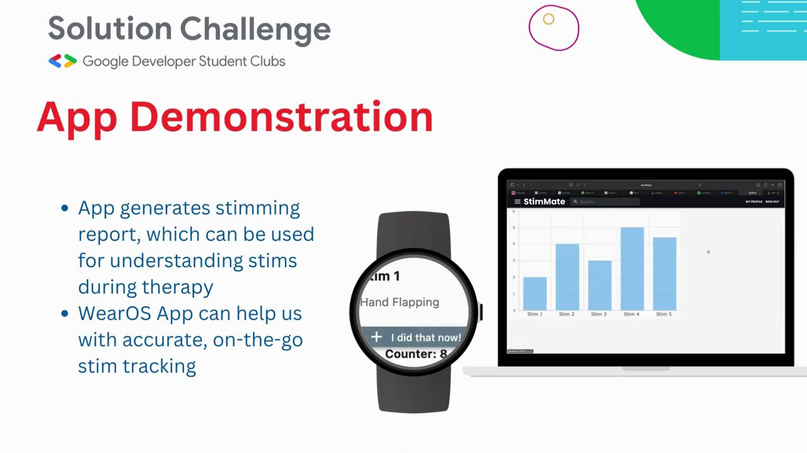

The idea
We built StimMate to suggest alternatives based on what other people found helpful and to let users keep track of what worked for them.
1Why we built it
Advice about stimming is usually generic, and what helps one person does nothing for another. We wanted an app that starts from the person. So we asked neurodivergent people directly which stims worked for them, and talked to psychologists and psychiatrists while we designed it.
2What it does
You tell it a little about yourself and the stims you use now. It suggests safer stims that people like you found helpful, keeps track of the ones you use, and turns that into a short report you can share with your therapist.


Behind the suggestions is a small recommendation model trained on 662 ratings from about 182 neurodivergent people.
We wanted the app to help someone try an alternative and remember how it went. The suggestions draw on what other people rated as helpful. The log gives each person a record of what they actually used, which they can bring to a conversation with their therapist.
3How it went
StimMate made the Global Top 100 of Google's GDSC Solution Challenge 2023. It was the first model I trained that other people used. With ratings from fewer than two hundred people, it also showed me how much of a result is decided by the data you collect before any training starts.